76 artes para você decidir: conteúdo do feed, stories, casa pronta e carrosséis. Aprove o que entra e diga o motivo do que sai. Os criativos de anúncio ficam no painel completo, porque são para copiar e subir sentado, não para decidir no celular.
25Conteúdo
12Casa pronta
15Stories
24Carrosséis
A arte já está pronta. Aqui você só decide o que entra: aprovar não produz
nada, e reprovar apaga a peça na próxima rodada, junto com o motivo que você
escrever.
Para postar, pegue o original: ownCloud, em
Design Grafico › Estudio-Autoral › AAAA-MM-DD, na pasta do dia. Lá o
arquivo é o PNG em tamanho cheio, e as legendas estão nos .md da mesma
pasta. Comece pelo LEIA-PRIMEIRO.md.
A imagem desta página é uma cópia comprimida, feita só para você ver e decidir no
celular. Não poste a imagem daqui.
Conteúdo
seguir, comentar, compartilhar · 25 peças
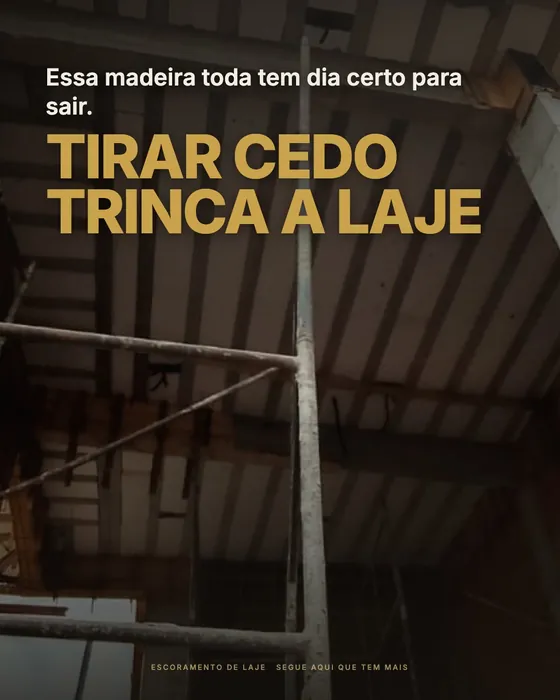
c01medoduas-camadas · feedTirar cedo trinca a laje
Todo cliente que passa aqui embaixo pergunta a mesma coisa: quando é que tira essa madeira toda?
E a resposta não é uma data no calendário. É o concreto ter ganhado resistência.
Tira antes, a laje trabalha antes da hora e trinca. E trinca de laje não se resolve com massa corrida, viu.
Salva esse aqui. Se um dia te disserem que "amanhã já dá para tirar", você vai lembrar.
c02objeçãocartaz · feedNão existe
Vou falar uma coisa que vai me render briga na área.
Orçamento de obra por metro quadrado não existe.
Existe índice de comparação, que é outra coisa. O metro quadrado de uma casa em terreno plano não é o mesmo de uma em declive. Não é o mesmo com fundação rasa e com estaca funda. Não é o mesmo com muro de arrimo e sem.
Quem te responde na hora não fez conta. Chutou.
Comenta aí se você discorda, que eu quero esse debate.
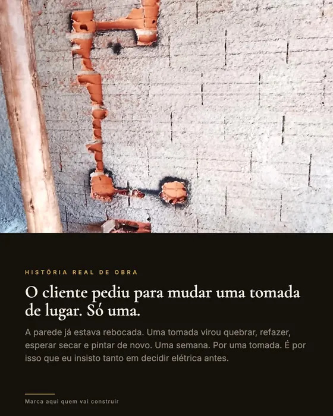
c03dordividido · feedO cliente pediu para mudar uma tomada de lugar. Só uma.
Vou te contar uma coisa que acontece em obra toda.
O cliente pediu para mudar uma tomada de lugar. Uma só. Parece nada.
Só que a parede já estava rebocada. Então foi quebrar, refazer o rasgo, passar o eletroduto, rebocar de novo, esperar secar e pintar.
Uma semana. Por uma tomada.
É por isso que eu encho o saco do cliente com a elétrica antes de fechar parede. Não é implicância, é que depois custa dez vezes mais.
Marca aqui alguém que vai construir e ainda não pensou nisso.
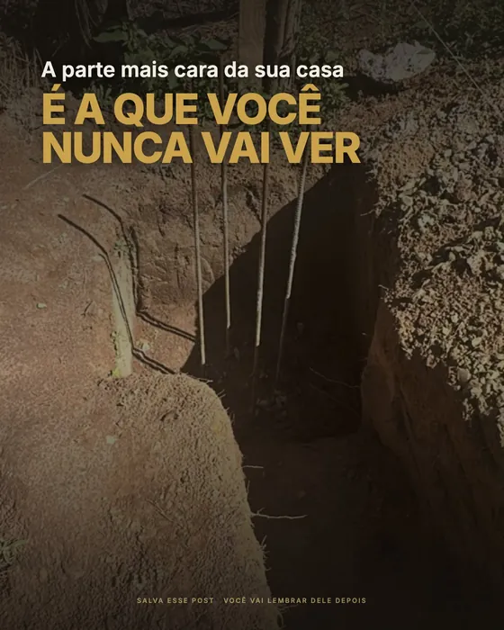
c04desejoduas-camadas · feedÉ a que você nunca vai ver
A parte mais cara da sua casa é a que você nunca vai ver.
Fundação e estrutura. Está embaixo da terra e dentro da parede, não aparece em foto nenhuma, e é onde a conta da obra se decide.
É por isso que dá tão errado escolher construtor pela foto do acabamento. Acabamento é a parte fácil, a parte que dá para trocar depois.
Salva esse post. Você vai lembrar dele na hora de comparar orçamento.
c05medocartaz · feedTira o escoramento antes
Quer economizar uma semana de obra? Faz assim, ó: tira o escoramento antes da hora.
Funciona lindamente. Você libera o pavimento, a equipe circula, a obra parece que andou.
Aí a laje trinca.
E aí você economizou uma semana e comprou um problema que fica na casa para sempre.
Compartilha com quem vai começar a construir esse ano.
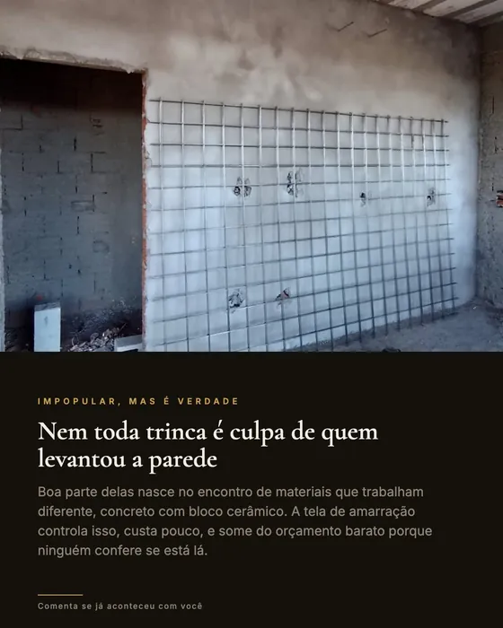
c06objeçãodividido · feedNem toda trinca é culpa de quem levantou a parede
Opinião impopular: nem toda trinca que aparece no primeiro ano é culpa de quem levantou a parede.
Boa parte delas nasce no encontro de materiais que trabalham diferente. Concreto e bloco cerâmico não se movimentam igual, e na junta entre os dois a fissura aparece.
Existe uma tela de amarração que controla isso. Custa pouco, e some do orçamento barato porque ninguém confere se está lá.
Execução também trinca parede, claro: amarração errada, falta de agulhamento, prumo fora. O que eu digo é que nem sempre é isso, e o pedreiro leva a culpa sozinho.
Aí a casa trinca, e o pedreiro leva a culpa de um projeto que ninguém fez.
Comenta se você já viu isso acontecer.
c07medoduas-camadas · feedConcreto torto
Forma torta vira concreto torto. E concreto não se desfaz.
Essa é a diferença entre uma obra que dá trabalho no começo e uma que dá dor de cabeça para sempre.
Conferir prumo e esquadro de forma leva vinte minutos. Corrigir concreto torto leva marreta.
Segue aqui que amanhã eu mostro outro.
c08objeçãodeclaracao · feedObra não estoura na obra. Estoura na decisão que veio antes dela.
Obra não estoura na obra. Estoura na decisão que veio antes dela.
Comprar o terreno sem saber o que cabe. Pedir preço sem ter projeto. Escolher pelo menor número. Contratar por diária.
Nenhuma dessas decisões parece cara no dia em que é tomada. Todas ficam caras depois.
c09medocartaz · feedÉ a que menos aparece
Olha essa vala aqui.
Fundação e contenção são as etapas que mais somem do orçamento, e são as que menos aparecem depois de pronta a casa.
Ninguém entra na sua casa e comenta sobre a fundação. Só que é ali que a conta se decide, e é ali que a proposta mais barata costuma estar incompleta, porque quem não fez projeto não sabe o que vai precisar.
Quando você for comparar propostas, comece por esse item. É o que mais separa uma conta séria de um número bonito.
Manda esse para quem vai pedir orçamento de obra agora.
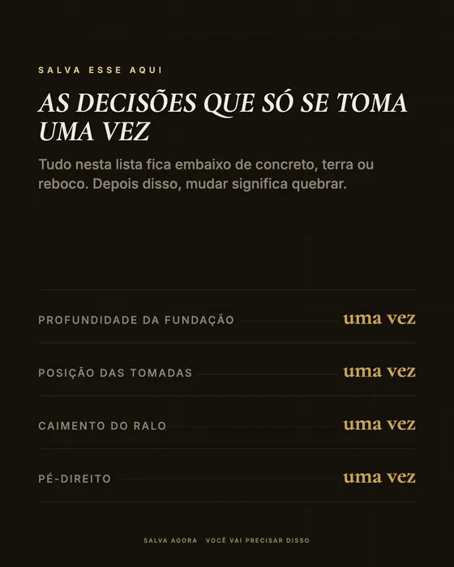
c10medoficha · feedAs decisões que só se toma uma vez
Salva esse aqui, é o post mais útil que eu já postei.
Tem coisa em obra que você decide uma vez na vida. Depois, mudar significa quebrar.
Profundidade da fundação. Posição das tomadas. Caimento do ralo. Pé-direito.
Tudo isso fica embaixo de concreto, terra ou reboco. Não é que fique difícil de mudar: fica caro de mudar, e o cliente sempre desiste no meio.
Salva agora. Você vai precisar disso numa reunião.
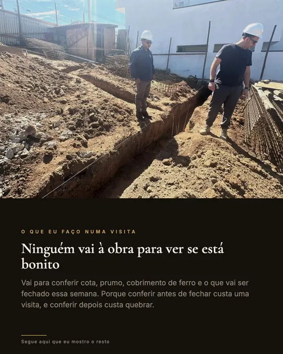
c11dordividido · feedNinguém vai à obra para ver se está bonito
Todo mundo acha que engenheiro vai à obra para ver se está bonito.
Vai para conferir cota, prumo, cobrimento de ferro e o que vai ser fechado essa semana.
Porque conferir antes de fechar custa uma visita, e conferir depois custa quebrar. A janela abre e fecha uma vez só.
Segue aqui que eu vou mostrando o resto.
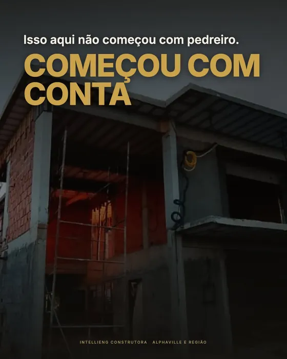
c12desejoduas-camadas · feedComeçou com conta
Isso aqui não começou com pedreiro. Começou com conta.
Quantitativo levantado, estrutura calculada, sequência definida, compra programada.
A obra só parece que começou no dia em que a máquina entra no terreno. Ela começou uns três meses antes, numa planilha.
c13objeçãocartaz · feedEstá incompleto
Vou ser sincero com você, mesmo sabendo que isso soa como interesse próprio.
O orçamento mais barato que está na sua mesa provavelmente não é mais barato. Ele é menor.
Faltam itens. Contenção, impermeabilização, a infraestrutura que passa antes do piso, a administração da obra. Nenhum deles some porque não existe. Some porque ninguém contou.
E aparece com a obra em pé, quando você não tem mais para onde correr.
Comenta ORÇAMENTO que eu te mando a lista dos itens que mais somem, para você conferir a proposta que te mandaram.
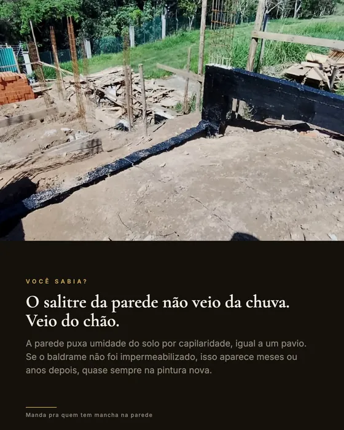
c14objeçãodividido · feedO salitre da parede não veio da chuva. Veio do chão.
Você sabia que o salitre que sobe na parede quase nunca veio da chuva?
Veio do chão.
A parede puxa a umidade do solo por capilaridade, igual a um pavio de vela puxando cera. Se o baldrame não foi impermeabilizado, a água sobe pela alvenaria.
E o pior é o tempo: isso aparece meses ou anos depois, quase sempre bem quando você acabou de pintar. Aí você culpa a tinta e troca de pintor, e não era nenhum dos dois.
Manda para quem tem aquela mancha na parede e não sabe de onde vem.
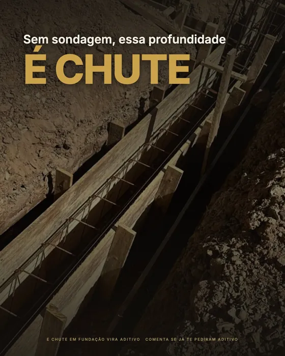
c15medoduas-camadas · feedÉ chute
Sem sondagem, a profundidade da fundação é chute.
E chute em fundação tem um jeito específico de dar errado. Na prática, o que eu vejo é sempre para mais.
Orçam estaca curta porque é mais barato de escrever na planilha. Na hora de executar, o solo decide, e a diferença vira aditivo.
Comenta aí se já te pediram aditivo de fundação no meio da obra.
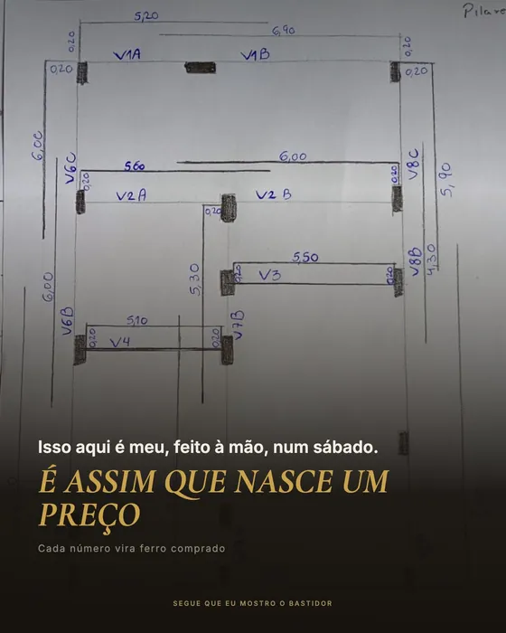
c16desejocroqui · feedÉ assim que nasce um preço
Isso aqui é meu, feito à mão, num sábado.
Cada retângulo é uma viga. Cada número é um vão que vai ter que vencer o próprio peso mais o peso da laje em cima.
Cada um desses números vira ferro comprado, dobrado e amarrado no lugar certo.
É assim que nasce um preço de obra. Quando alguém te dá um número sem ter feito isso, você recebeu uma opinião com cara de planilha.
Segue aqui que eu mostro o bastidor.
c17dordeclaracao · feedNinguém entra na sua casa e elogia a fundação. E é lá que a conta da obra se decide.
Ninguém entra na sua casa e elogia a fundação.
E é lá que a conta da obra se decide.
Essa frase resume por que tanta obra de alto padrão estoura: as pessoas decidem construtor olhando a parte que aparece, e a conta é feita na parte que não aparece.
c18dorcartaz · feedFoi a melhor semana
"Passei na obra e parecia que ninguém tinha feito nada essa semana."
Eu ouço isso todo mês. E quase sempre foi a melhor semana da obra.
Instalação embutida, prumada de esgoto, infraestrutura elétrica, tudo isso acontece dentro da parede e embaixo do piso. Não muda nada na foto.
Obra que "parece" que anda é obra que está fazendo acabamento. Obra que anda de verdade, em certas semanas, parece parada.
Segue aqui que eu explico o resto.
c19objeçãoduas-camadas · feedProjeto executivo
Pedreiro bom não substitui projeto executivo. E isso não é desaforo com pedreiro nenhum.
Um bom profissional executa muito bem o que está desenhado. O que ele não tem como fazer é dimensionar a estrutura, decidir a fundação a partir da sondagem e definir a sequência da obra inteira.
Não é falta de capacidade. É que essas decisões precisam existir no papel antes de alguém colocar a mão na massa.
Comenta que eu explico melhor.
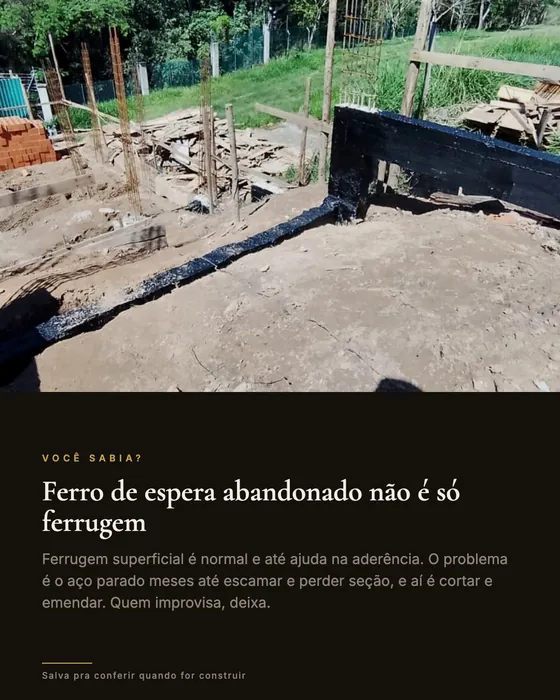
c20medodividido · feedFerro de espera abandonado não é só ferrugem
Você sabia que nem toda ferrugem em ferro de obra é problema?
A ferrugem superficial no aço de espera é esperada, e ela até melhora a aderência com o concreto. Escova e segue.
O que reprova é outra coisa: o aço que fica meses parado até a ferrugem escamar e comer seção. Aí não é mais escovar, é cortar e emendar, e isso tem que passar pelo calculista.
A diferença entre um caso e outro não é sorte. É planejamento de sequência de obra: ferro de espera não deveria ficar esperando.
Salva para conferir quando você for construir.
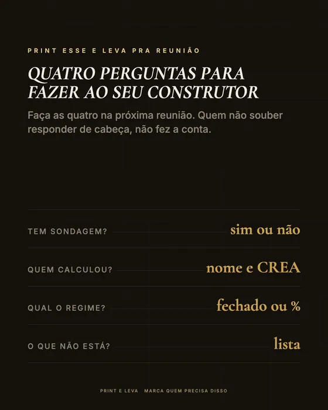
c21objeçãoficha · feedQuatro perguntas para fazer ao seu construtor
Print esse aqui e leva para a próxima reunião com construtor.
Pergunta 1: tem sondagem do solo? Sim ou não. Pergunta 2: quem calculou a estrutura? Nome e CREA. Pergunta 3: qual o regime, preço fechado ou percentual sobre o custo? Pergunta 4: o que não está incluído nesse valor?
Faça as quatro. Quem não souber responder de cabeça não fez a conta, fez estimativa.
E a quarta é a que mais dói. Marca aqui quem está pedindo orçamento agora.
c22desejocartaz · feedEssa pergunta não tem resposta
"Quanto custa o metro quadrado?"
É a pergunta que eu mais recebo, e ela não tem resposta.
Não porque eu não queira responder. É porque duas casas do mesmo tamanho podem ter custos muito diferentes dependendo do terreno, da fundação, da contenção e do que você escolheu dentro delas.
Índice serve para comparar mercado. Não serve para orçar a sua casa.
Comenta aí o que te responderam quando você perguntou isso. Eu quero ver.
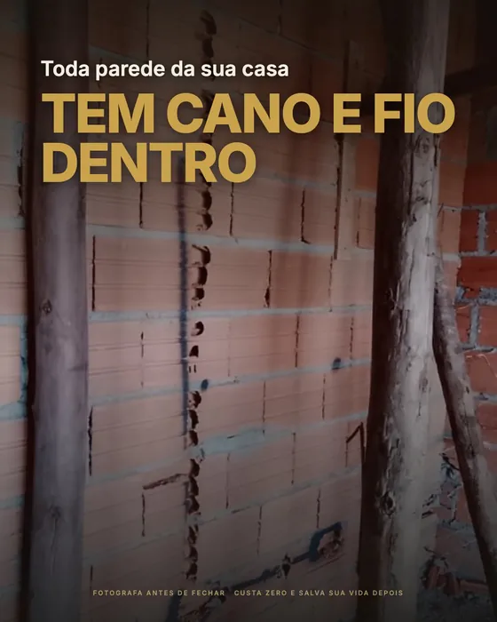
c23dorduas-camadas · feedTem cano e fio dentro
Toda parede da sua casa tem cano e fio dentro. E depois do reboco você não faz ideia de onde eles estão.
Faz uma coisa: antes de fechar qualquer parede, tira foto dela aberta. Com o celular mesmo, sem capricho.
Custa zero. E daqui a três anos, quando precisar furar para instalar alguma coisa, essa foto vale ouro.
Compartilha com quem está com obra em andamento agora.
c24desejodividido · feedQuem constrói a sua casa também trabalha no domingo. Só que na planilha.
Domingo à noite, e eu estou aqui na planilha.
Não é sacrifício e eu não quero medalha. É que a obra andar de segunda a sábado depende de alguém ter decidido antes o que compra, o que entra e em que ordem.
Se essa decisão não acontece no domingo, na terça a equipe está parada esperando material.
Obra parada quase nunca é falta de gente. É falta de decisão.
Segue aqui que eu mostro o bastidor.
c25desejocartaz · feedChama no direct
Se você chegou até aqui, provavelmente já tem o terreno.
E se já tem o terreno, a parte cara da decisão já passou. Agora vem a parte que decide se essa casa vai ser a melhor compra da sua vida ou um assunto que você vai querer esquecer.
Chama no direct que eu respondo. Sem compromisso e sem discurso de vendedor: a gente conversa sobre o seu terreno e eu te digo o que eu faria.
Casa pronta
o resultado, com imagem de referência · 12 peças
d01desejoduas-camadas · feedMas é ela que segura isso
Ninguém sonha com a fundação. As pessoas sonham com a varanda, com a cozinha, com a luz entrando na sala no fim da tarde.
Só que é a fundação que segura tudo isso. E ela é decidida antes de existir qualquer desenho de cozinha.
A ordem em que as decisões acontecem numa obra não é a ordem em que elas aparecem. Quem inverte isso paga duas vezes.
d02desejocartaz · feedEstá comprando dois anos da sua vida
Você não está contratando uma obra. Está comprando dois anos da sua vida.
É esse o prazo médio de uma casa de alto padrão, entre projeto, aprovação e execução. Dois anos em que alguém vai te ligar com pergunta, alguém vai pedir decisão, e alguma coisa vai dar errado.
A pergunta certa na hora de escolher construtora não é só quanto custa. É como vão ser esses dois anos.
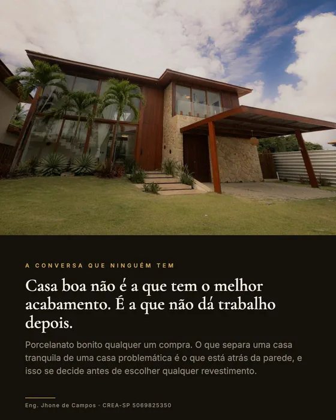
d03desejodividido · feedCasa boa não é a que tem o melhor acabamento. É a que não dá trabalho depois.
Casa boa não é a que tem o melhor acabamento. É a que não dá trabalho depois.
Porcelanato bonito qualquer um compra, e você troca daqui a dez anos se enjoar.
O que separa uma casa tranquila de uma casa problemática está atrás da parede e embaixo do piso: instalação bem-feita, impermeabilização na hora certa, caimento correto, estrutura dimensionada.
Nada disso aparece em foto de decoração. Tudo isso decide se você vai chamar alguém para consertar coisa no ano que vem.
d04desejoduas-camadas · feedUm buraco no chão
Toda casa que você acha bonita já foi um buraco no chão com ferro para fora.
Eu falo isso porque muita gente se assusta quando visita a própria obra pela primeira vez. Parece que nunca vai virar casa.
Vira. Mas o que decide se vai virar bem ou mal já aconteceu antes: no projeto, na sondagem e na conta.
d05dorcartaz · feedTem 400 decisões
Entre comprar o terreno e a casa ficar assim, tem umas 400 decisões.
Altura do pé-direito, posição de cada tomada, caimento de cada ralo, largura do corredor, onde passa o dreno do ar, se a janela abre para dentro ou para fora.
Você vai tomar todas, ou alguém toma por você. Não existe terceira opção.
A diferença entre uma obra tranquila e uma obra sofrida é ter alguém que traz cada decisão na hora certa, com as opções e o custo de cada uma, em vez de te ligar com o pedreiro parado esperando resposta.
d06desejodividido · feedVocê sonha e personaliza. A gente cuida de todo o resto.
Você sonha e personaliza. A gente cuida de todo o resto.
Projeto executivo, quantitativo, compra de material, execução e responsabilidade técnica com CREA. Você acompanha por relatório e recebe a chave.
É para quem já tem o terreno, quer uma casa de alto padrão e não quer, em nenhum momento, lidar com canteiro de obra.
Se é o seu caso, chama no direct.
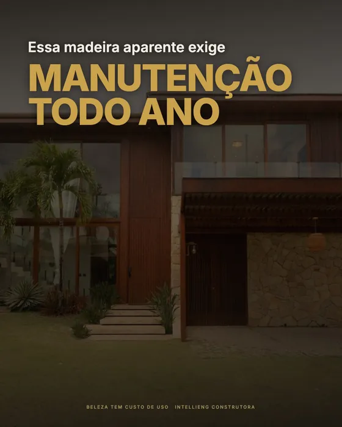
d07medoduas-camadas · feedManutenção todo ano
Essa madeira aparente que todo mundo quer exige manutenção todo ano.
Não é defeito, é a natureza do material. Sol e chuva atacam, e o verniz tem prazo. Quem não sabe disso na hora de escolher descobre no terceiro ano, quando a fachada começa a ficar cinza.
Beleza tem custo de uso, e o custo de uso quase nunca entra na conversa da escolha.
Isso não é motivo para não usar. É motivo para escolher sabendo.
d08objeçãocartaz · feedMuda a estrutura inteira
Você sabia que aquele balanço grande, sem pilar embaixo, muda a estrutura da casa inteira?
Balanço não tem apoio na ponta, então o esforço volta todo para dentro da estrutura. Isso muda viga, muda armadura, às vezes muda a fundação.
É um detalhe de arquitetura que parece só estético e mexe no custo de um jeito que quase ninguém antecipa.
Por isso arquiteto e calculista precisam conversar antes, não depois.
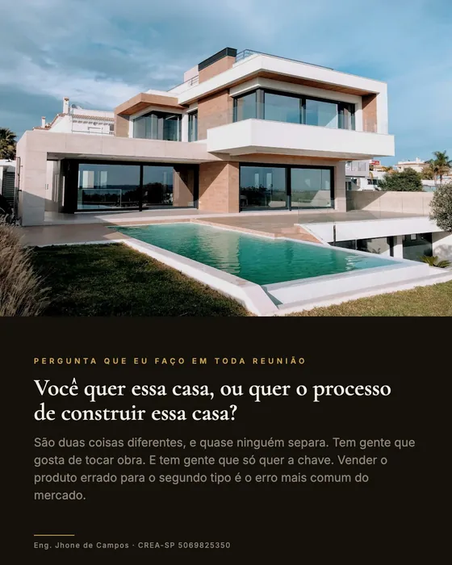
d09dordividido · feedVocê quer essa casa, ou quer o processo de construir essa casa?
Essa é a pergunta que eu faço em toda primeira reunião: você quer essa casa, ou quer o processo de construir essa casa?
São duas coisas diferentes, e quase ninguém separa.
Tem gente que gosta de obra. Gosta de escolher, de ir lá no sábado, de acompanhar. Para essa pessoa, tocar a própria obra com apoio técnico faz sentido e é mais barato.
E tem gente que só quer a chave. Vender o produto errado para essa segunda pessoa é o erro mais comum do mercado, e ela descobre na primeira semana.
Comenta aí de qual dos dois tipos você é.
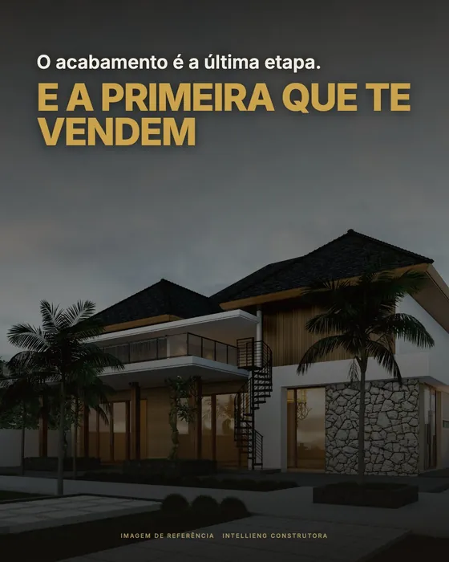
d10desejoduas-camadas · feedE a primeira que te vendem
O acabamento é a última etapa da obra. E é a primeira coisa que te vendem.
Faz sentido comercial: é o que aparece, é o que fotografa bem, é o que dá para mostrar em reunião.
Só que a decisão de acabamento é a mais fácil de mudar e a menos determinante do resultado. Você troca revestimento até o dia da compra. Não troca a profundidade da fundação.
Quando a conversa de venda começa pelo acabamento, é sinal de que o resto não está pronto para ser mostrado.
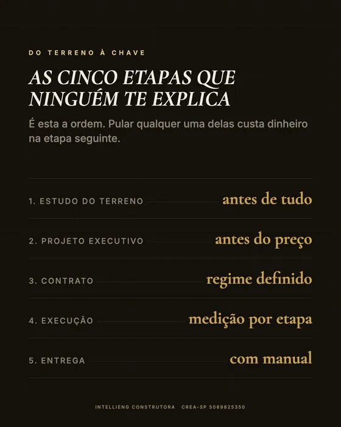
d11desejoficha · feedAs cinco etapas que ninguém te explica
Salva esse aqui. É a ordem certa do começo ao fim, e cada etapa pulada custa dinheiro na seguinte.
Um: estudo do terreno, antes de tudo. Zoneamento, recuo, declive, sondagem. Dois: projeto executivo, antes do preço. Sem ele nenhum orçamento é comparável. Três: contrato, com o regime definido. Preço fechado ou percentual sobre custo. Quatro: execução, com medição por etapa entregue, não por presença. Cinco: entrega, com manual e garantias por escrito.
A maioria das obras que dão errado pulou a etapa dois. É sempre a mesma.
d12desejocartaz · feedChama no direct
Se você já tem o terreno, a parte cara da decisão já passou.
Agora vem a que define o resultado, e ela não é estética: é quem responde tecnicamente pela obra e sob qual regime de contrato.
Chama no direct que eu respondo. Sem discurso de vendedor: a gente conversa sobre o seu terreno e eu te digo o que eu faria no seu lugar.
Stories
régua de 5 dias, 1080x1920 · 15 peças
st-01medocartaz · storyQue não tem volta
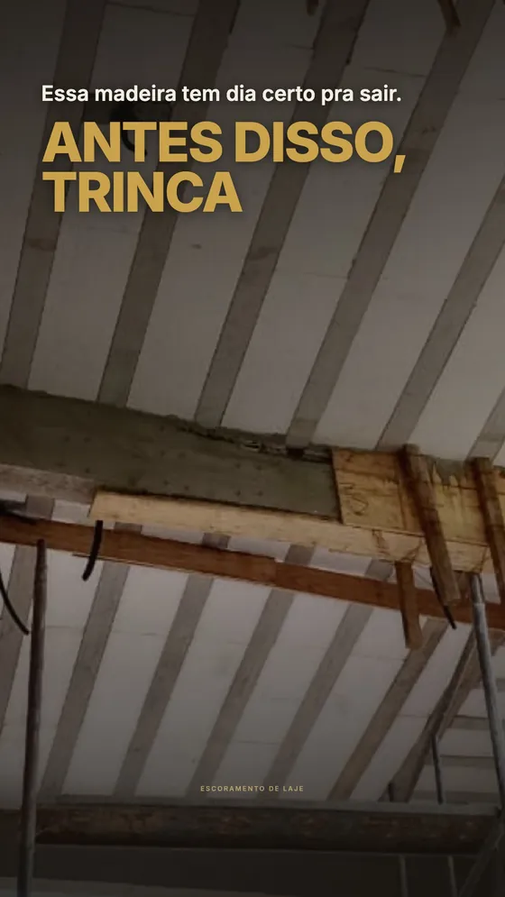
st-02medoduas-camadas · storyAntes disso, trinca
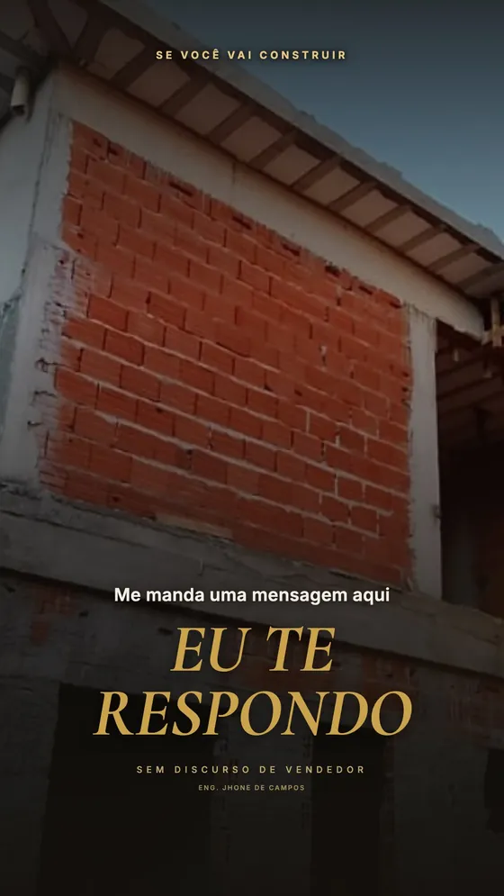
st-03desejocartaz · storyEu te respondo
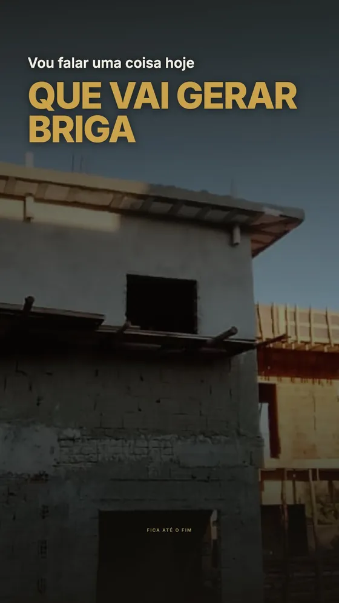
st-04objeçãoduas-camadas · storyQue vai gerar briga
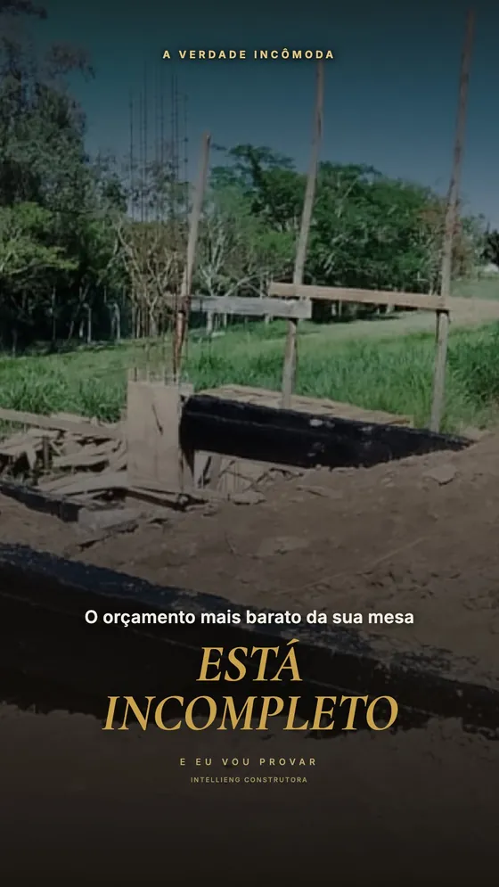
st-05objeçãocartaz · storyEstá incompleto
st-06objeçãoficha · storyO que falta na proposta barata
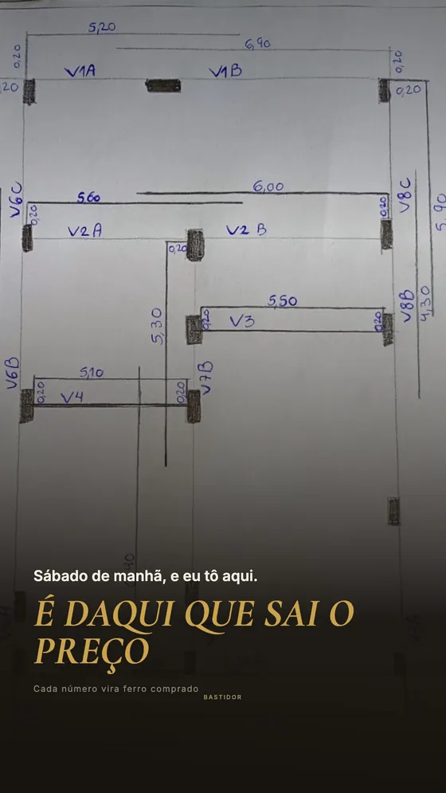
st-07desejocroqui · storyÉ daqui que sai o preço
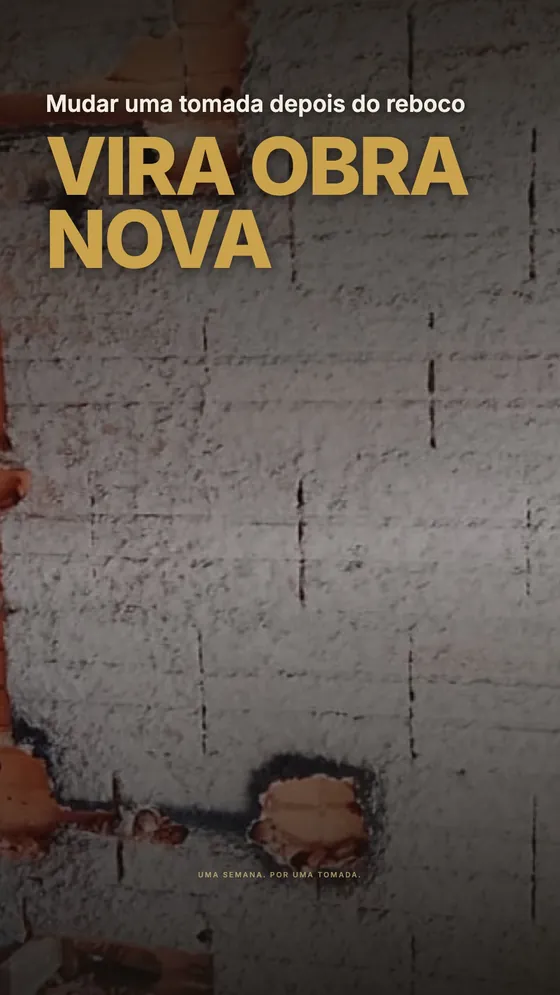
st-08dorduas-camadas · storyVira obra nova
st-09objeçãodeclaracao · storyObra não estoura na obra. Estoura na decisão que veio antes.
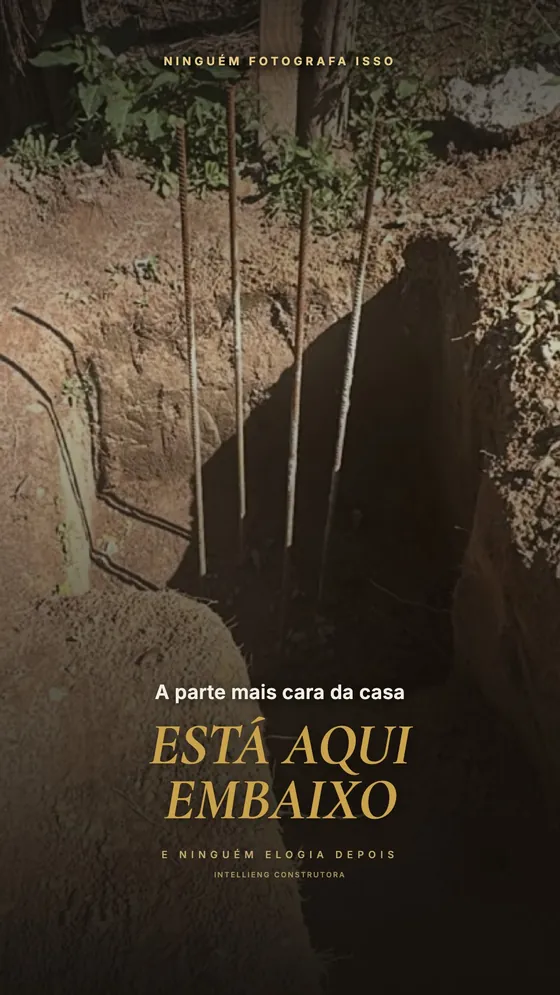
st-10medocartaz · storyEstá aqui embaixo
st-11medoficha · storyAs decisões que só se toma uma vez
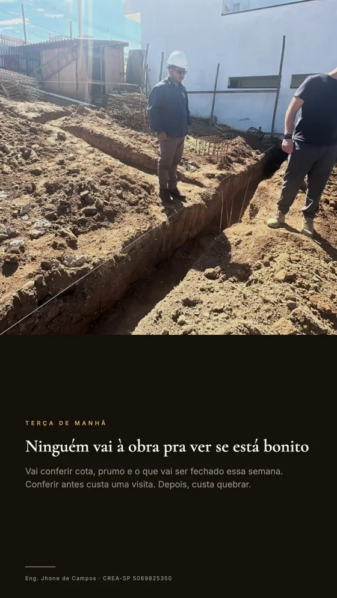
st-12dordividido · storyNinguém vai à obra pra ver se está bonito
st-13desejocartaz · storyTem 400 decisões
st-14desejoduas-camadas · storyCompra dois anos da sua vida
st-15desejocartaz · storyChama no direct
Carrosséis
3 sequências de 8 slides · 24 peças
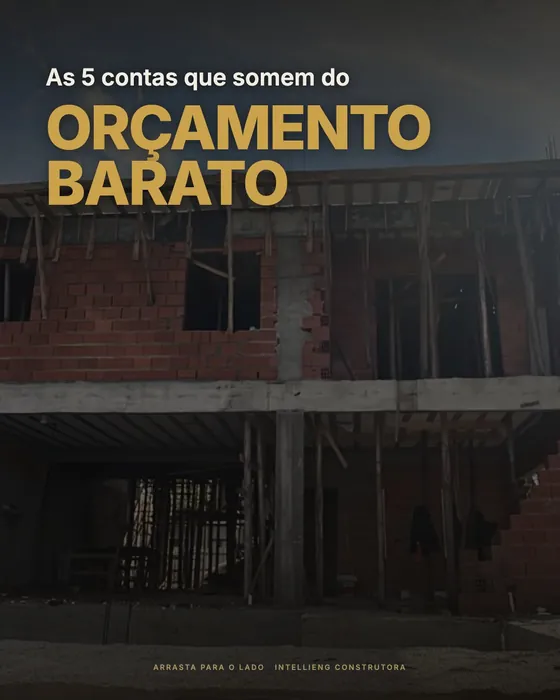
c1-s1duas-camadas · feedOrçamento barato
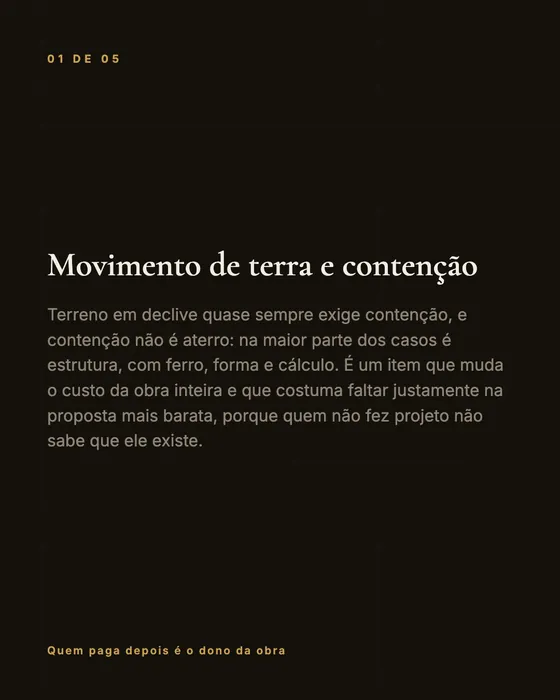
c1-s2slide · feedMovimento de terra e contenção
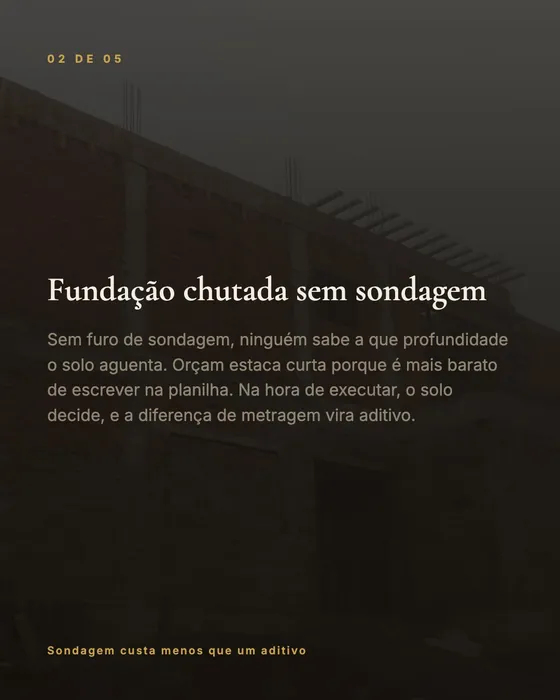
c1-s3slide · feedFundação chutada sem sondagem
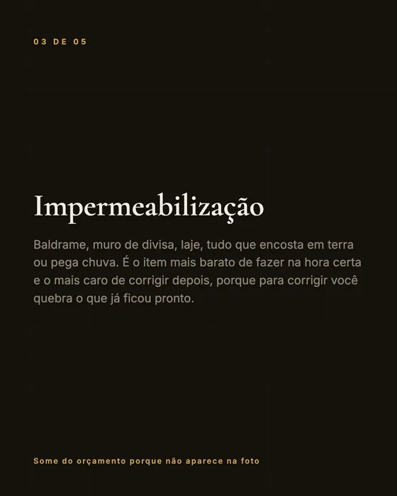
c1-s4slide · feedImpermeabilização
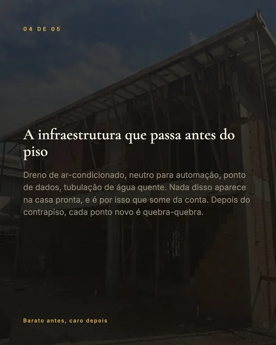
c1-s5slide · feedA infraestrutura que passa antes do piso
c1-s6slide · feedA administração da obra
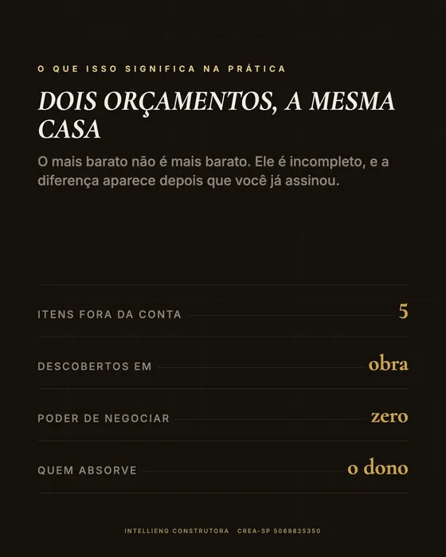
c1-s7ficha · feedDois orçamentos, a mesma casa
c1-s8cartaz · feedComenta ORÇAMENTO
c2-s1duas-camadas · feedPreço fechado
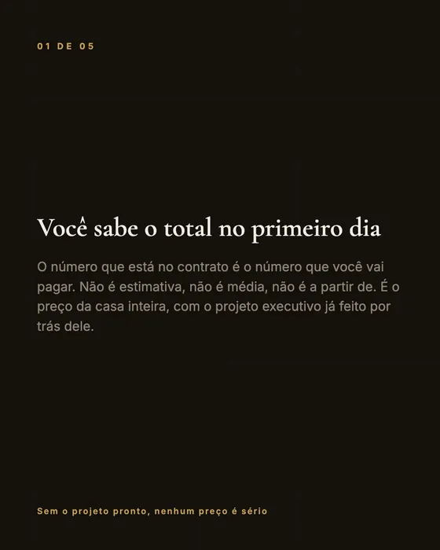
c2-s2slide · feedVocê sabe o total no primeiro dia
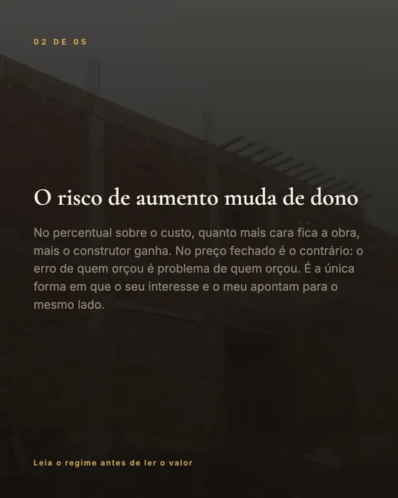
c2-s3slide · feedO risco de aumento muda de dono
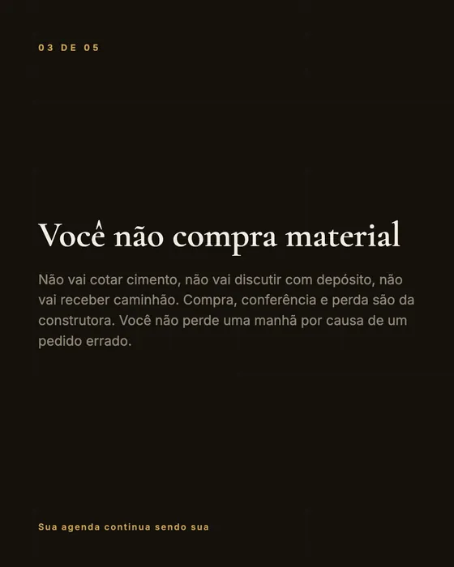
c2-s4slide · feedVocê não compra material
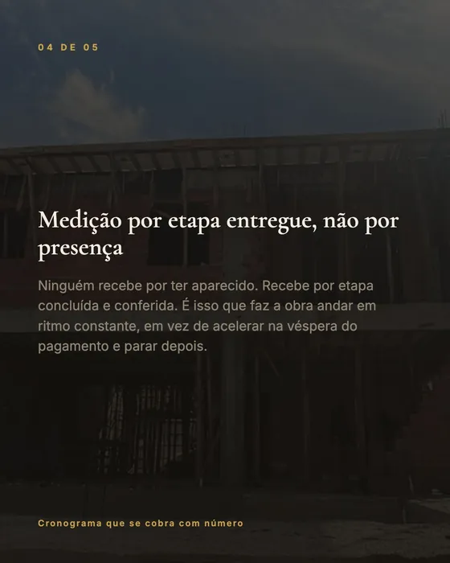
c2-s5slide · feedMedição por etapa entregue, não por presença
c2-s6slide · feedVocê acompanha sem ir lá
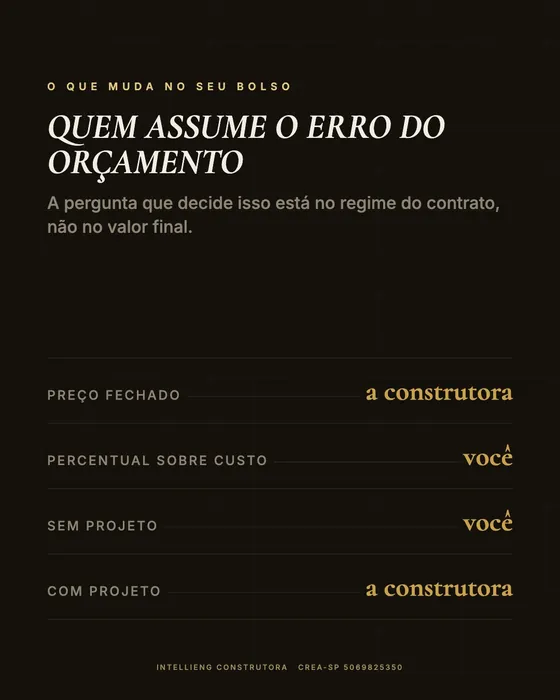
c2-s7ficha · feedQuem assume o erro do orçamento
c2-s8cartaz · feedComenta CASA
c3-s1cartaz · feedFaz assim, ó
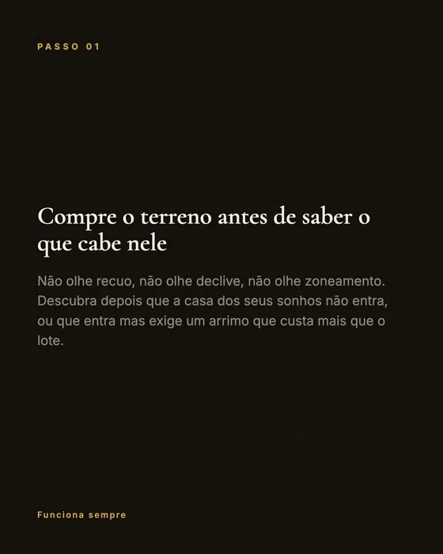
c3-s2slide · feedCompre o terreno antes de saber o que cabe nele
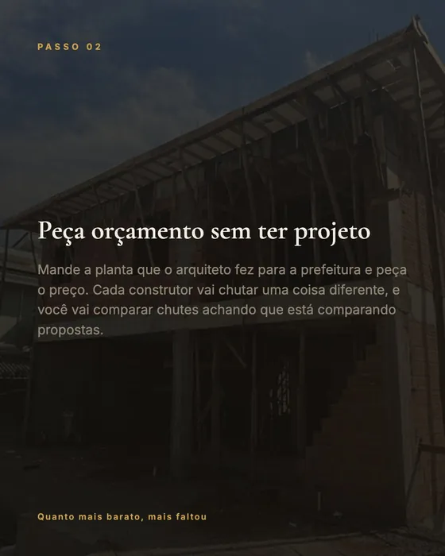
c3-s3slide · feedPeça orçamento sem ter projeto
c3-s4slide · feedEscolha pelo menor preço
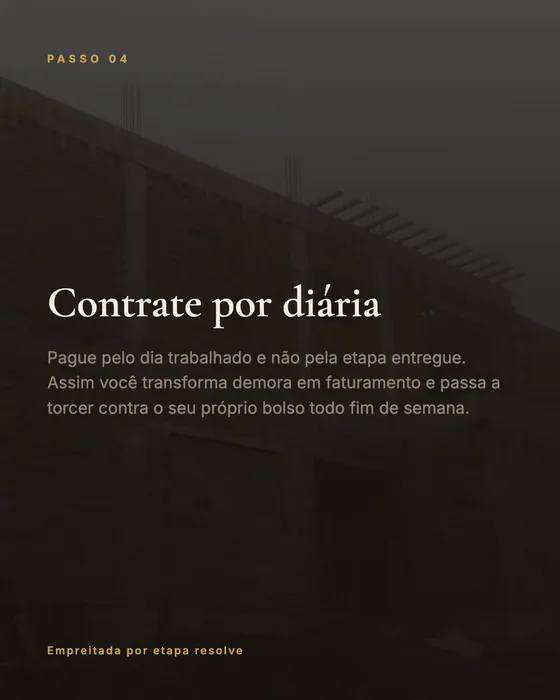
c3-s5slide · feedContrate por diária
c3-s6slide · feedFeche a parede sem fotografar
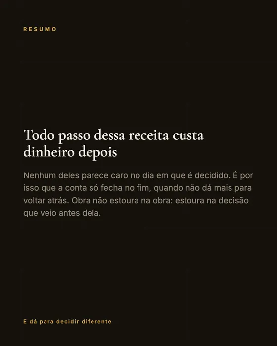
c3-s7slide · feedTodo passo dessa receita custa dinheiro depois